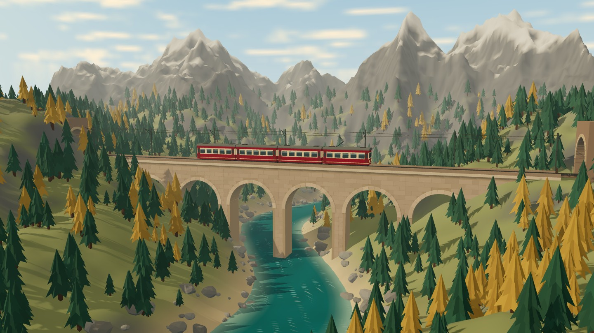
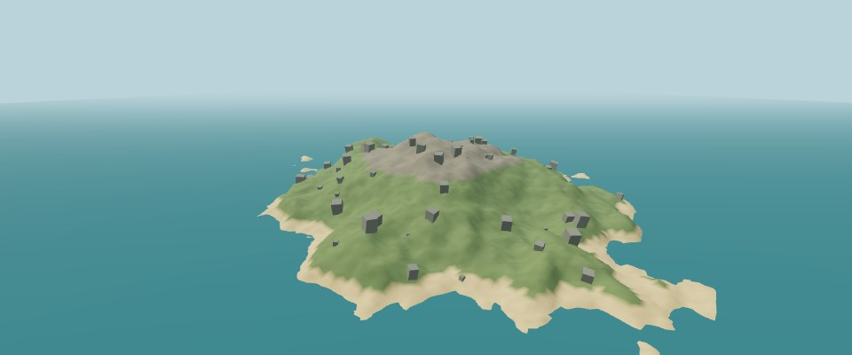

Explore the examples
Two procedural worlds built with Roamwright. Drag to orbit, scroll or pinch to zoom, and change the seed in the URL to explore a different landscape.
-

Alpine viaductRun the train across eight stone arches, then watch it from the riverbank.
-

Seeded islandTrace a coastline shaped by noise and dotted with weathered rocks.
Built with Roamwright
Fly over Darujhistan, Pale, and the Rhivi Plain in Malazan, an explorable world based on Malazan Book of the Fallen.